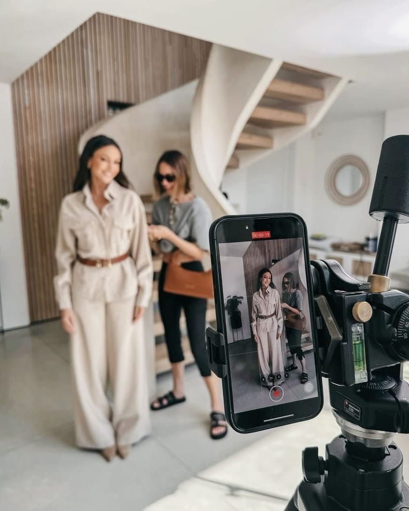
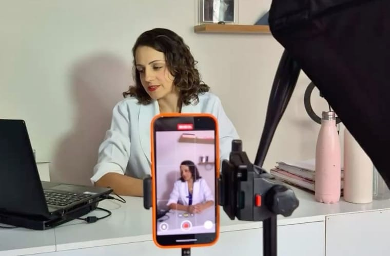
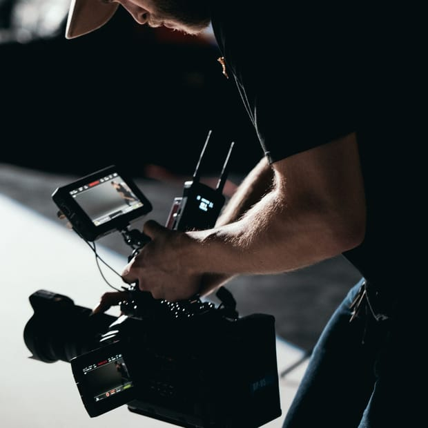
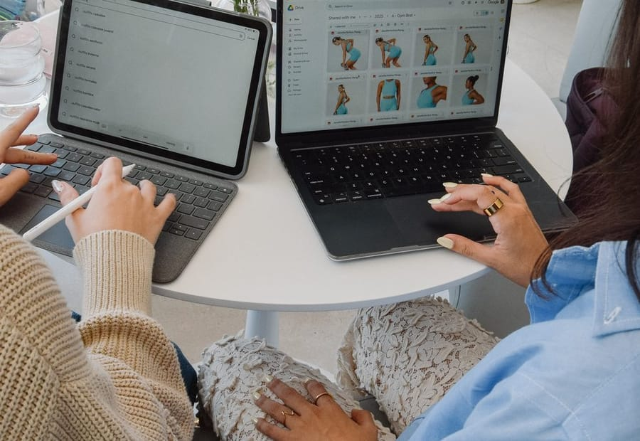
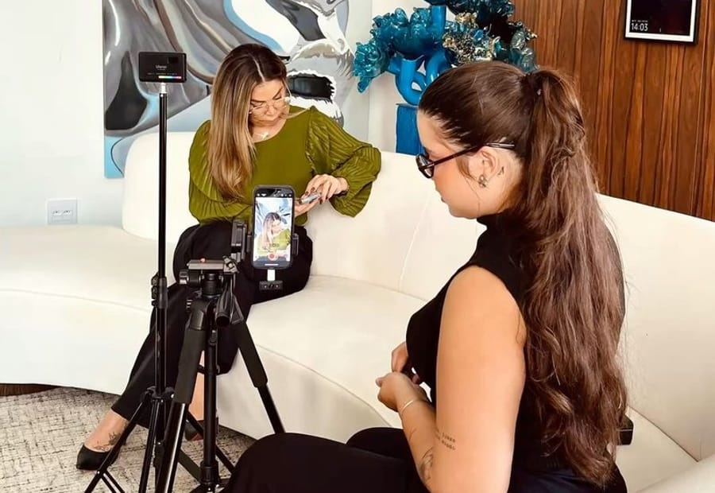
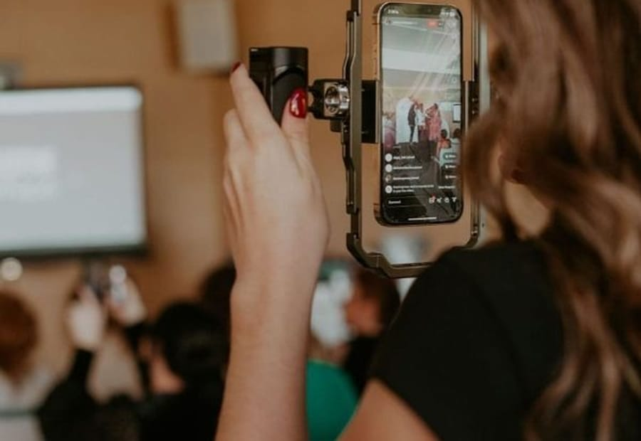
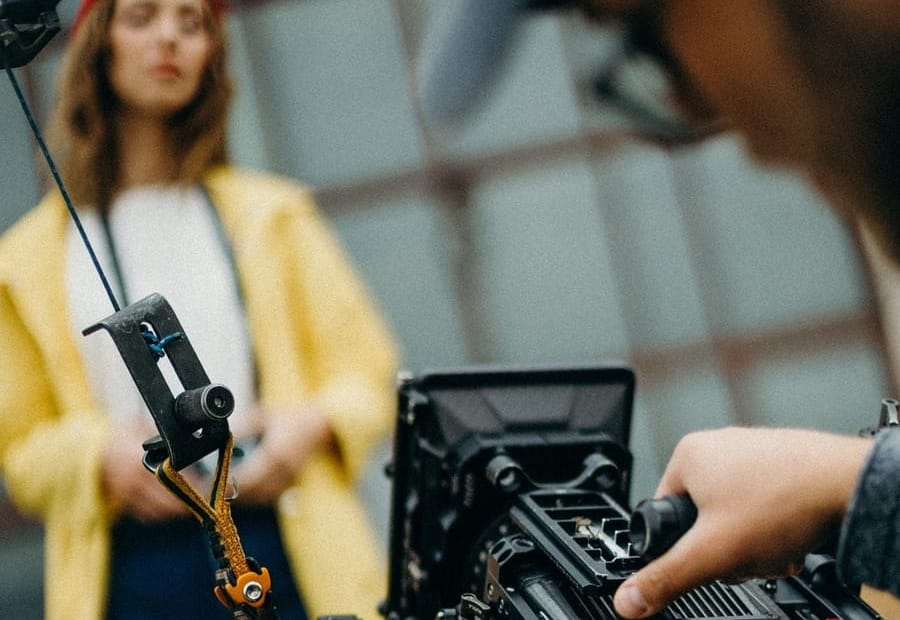

Un oficio reconocido que casi nadie podía ver.
Años de trabajo en portones, barandales y automatización, sin una marca que lo sostuviera fuera del boca a boca.
Estudio creativo independiente · Miami
Estrategia, identidad, contenido, campañas y producción para alinear el valor de una marca con la forma en que se ve, se entiende y se experimenta.




Trabajo seleccionado
Creamos Milos Pro desde cero: estrategia, identidad, sitio web, presencia local, contenido y campañas para conectar su experiencia en herrería y automatización con dos mercados en Miami —propietarios de vivienda y profesionales de la construcción.
Años de trabajo en portones, barandales y automatización, sin una marca que lo sostuviera fuera del boca a boca.
Montaje del caso
Secuencia de obra, marca aplicada y producción. En publicación.
Posicionamiento, mensaje y arquitectura de marca para dos audiencias que compran de forma distinta.
Identidad que funciona igual en un portón instalado que en una ficha de Google.
Contenido y campañas conectando la ficha local con la búsqueda de quien ya está comparando.
Capacidades
Lumma reúne pensamiento estratégico y ejecución creativa para construir marcas capaces de sostener una idea en cada punto de contacto.
Definimos qué debe resolver la marca, para quién y con qué argumento. La estrategia ordena lo que se dice y lo que se deja de decir.
Identidad visual y verbal, y el sistema que la mantiene reconocible en cada punto de contacto, no sólo en el manual.

Sistemas de contenido y campañas construidos sobre una idea, no sobre formatos sueltos que compiten entre sí.

Concepto, guion, dirección, fotografía, edición y postproducción trabajando para una misma idea.

Fin del prototipo · el resto del home continúa tras la aprobación de esta dirección.